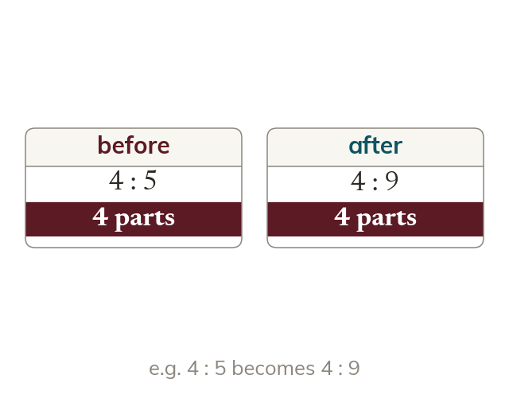

The fixed share
When one share changes, the OTHER share often stays the same amount. That fixed share is the way into the problem.
When a quantity is added to or taken from ONE share, the ratio changes, but the OTHER share often stays exactly the same amount. That fixed share is the way into the problem - it must represent the same real amount in both the old ratio and the new ratio.